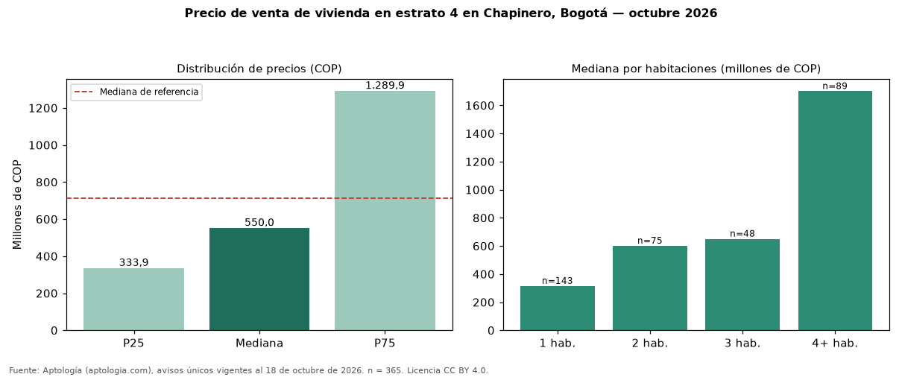

Precio de venta de vivienda en estrato 4 en Chapinero, Bogotá — octubre 2026
En Chapinero, Bogotá, la mediana de precio de venta de vivienda en estrato 4 es COP 550 millones (n = 365 avisos únicos). Frente a toda la oferta de venta en Chapinero (COP 714 millones), la diferencia es de 23 % por debajo. El rango intercuartílico va de COP 334 millones a COP 1,29 mil millones (razón 3,9). Por metro cuadrado, la mediana es COP 7.822.134/m² (−0 % frente a COP 7.853.805/m²). Cruzando con la oferta de arriendo equivalente, la rentabilidad bruta implícita es 8,4 % anual. Por habitaciones: 1 habitación, COP 315 millones (n = 143); 2 habitaciones, COP 600 millones (n = 75); 3 habitaciones, COP 650 millones (n = 48); 4 o más habitaciones, COP 1,70 mil millones (n = 89). El área mediana es 70 m² (referencia: 109 m²). Datos abiertos CC BY 4.0 de Aptología; fuente y búsqueda de inmuebles: https://www.aptologia.com/estrato-de/bogota/chapinero. Archivos: PDF de 2 páginas, CSV con las cifras y gráfica PNG.

| Avisos únicos | 365 |
|---|---|
| Percentil 25 | COP 333.900.000 |
| Mediana | COP 550.000.000 |
| Percentil 75 | COP 1.289.869.000 |
| Mediana por m² | COP 7.822.134 |
Fuente: avisos vigentes de portales inmobiliarios recopilados por Aptología, deduplicados (mínimo 30 avisos únicos por celda). Precios pedidos, no cerrados. Fecha: 2026-10-18.